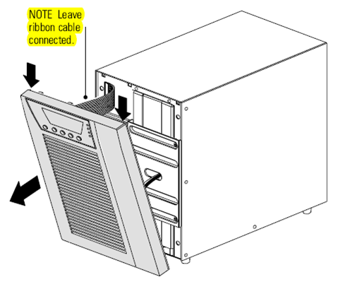
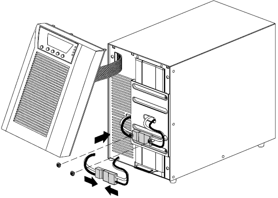
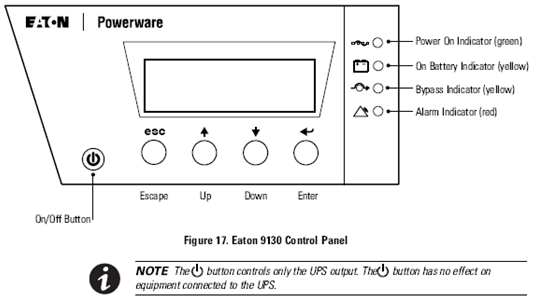

Eaton Powerware 9130 UPS (Uninterruptible Power Supply)/PDU (Power Distribution Unit) Installation and Operation
 Setup Procedure
Setup Procedure
Parts and Materials Required
- Eaton Powerware 9130 UPS for 120V (North America)
OR
- Eaton Powerware 9130 UPS for 220V (International and Required for Fusion)
|
|
Warning—Do not connect the UPS power cord to utility until after installation is completed. |

|
Note—
ALL Fusion Installs require the Output Voltage on the UPS to be set at 220V. |
- Power down the system.
- Remove the UPS front cover. To remove the cover, pull the front cover from the sides and pull the cover toward you to unclip it from the cabinet.
NOTE—A ribbon cable connects the LCD control panel to the UPS. Do not pull on the cable or disconnect it. 
- Remove the two screws from the screw mounts and retain.
- Connect the internal battery connector. Connect the white connectors together, by connecting red to red, and black to black. Press the two parts tightly together to ensure a proper connection.


- Place the battery connector between the screw mounts. Reinstall and align the two screws to hold the connector in place.
- Replace the UPS front cover. To replace the cover, verify that the ribbon cable is protected, then insert the clips on the back of the cover into the cabinet and push firmly to snap the cover into place.
Installation Procedure
- Plug the equipment to be protected into the UPS, but do not turn on the protected equipment.
- Make any necessary provisions for cord retention and strain relief.
- Plug the UPS power cord into a power outlet.
- Press the Power On button.
The UPS front panel display illuminates and shows a status of UPS initializing.
- Verify that the UPS transfers to Standby mode (UPS on standby).
- Press the button on the UPS front panel for at least three seconds.
The UPS front panel display changes status to UPS starting.
- Check the UPS front panel display for active alarms or notices. If the indicator is on, do not proceed until all alarms are clear.
- Check the UPS status from the front panel to view the active alarms. Correct the alarms and restart if necessary.
- Verify that the indicator illuminates solid, indicating that the UPS is operating normally and any loads are powered. The UPS should be in Normal mode.
- Press the ESC button until the start screen appears.
NOTE—The internal batteries charge to 90% capacity in less than 3 hours. However, the batteries will not be fully charged for 48 hours after installation or long-term storage. - Connect the UPS to the Panther System.
- Continue to Set the Input Voltage Range for the UPS.
Disconnecting the Site Wiring Fault Alarm
- If the Site Wiring Fault Alarm is triggered, verify that the polarity at the wall outlet is correct. If the polarity of the wall outlet is in reverse, please have the wall outlet polarity corrected by a qualified person.
- If the polarity is correct and the alarm still sounds, proceed with step 3 to disable the Site Wiring Fault Alarm.
- Procedure for disabling the Site Wiring Fault Alarm:
- From the start screen (EATON), press the Down button until Settings appears, then press the Enter button.
- Press the Down button until User Settings appears, then press the Enter button.
- Press the Down button until Site Wiring Fault Alarm appears, then press the Enter button.
- Press the Down button until Disable appears, then press the Enter button.
- Press the Escape button until the start screen (EATON) is displayed (around 3–4 times).
Operation

NOTE—The UPS has a backlit four-button graphical LCD. It provides useful information about the UPS itself, load status, events, measurements, and settings. UPS Startup
- Verify that the UPS power cord is plugged in.
- Switch on utility power where the UPS is connected.
The UPS front panel display illuminates and shows a status of UPS initializing.
- Verify that the UPS transfers to Standby mode (UPS on standby).
- Press the button on the UPS front panel for at least one second.
The UPS front panel display changes status to UPS starting.
- Check the UPS front panel display for active alarms or notices.
- If the indicator is on, do not proceed until all alarms are clear. Check the UPS status from the front panel to view the active alarms. Correct the alarms and restart if necessary. Verify that the indicator illuminates solid, indicating that the UPS is operating normally and any loads are powered.
The UPS should be in Normal mode.
- Press the ESC button until the start screen appears.
UPS Shutdown
- Press the power button on the front panel for three seconds.
The UPS starts to beep and shows a status of UPS off pending.
The UPS then transfers to Standby mode and the indicator turns off.
- Switch off utility power where the UPS is connected.
NOTE—Releasing the button before three seconds returns the UPS to its original operating mode. Testing New Batteries
- Plug the UPS into a power outlet for 48 hours to charge the batteries.
- Press any button to activate the menu options.
- Select CONTROL then START BATTERY TEST.
The UPS starts a battery test if the batteries are fully charged, the UPS is in Normal mode with no active alarms, and the bypass voltage is acceptable.
During the battery test, the UPS transfers to Battery mode and discharges the batteries for 25 seconds. The front panel displays Battery test running and the percentage of the test completed.
Troubleshooting
NOTE—The Eaton 9130 is designed for durable, automatic operation and also alerts you whenever potential operating problems may occur. Usually the alarms shown by the control panel do not mean that the output power is affected. Instead, they are preventative alarms intended to alert the user.
- Events are silent conditions that are recorded in the Event Log as status information, such as Clock Set Done.
- Notices are announced by a beep every 5 seconds, recorded in the Event Log, and displayed on the LCD. Examples of notices include UPS on Battery and UPS on Bypass.
- Alarms are announced by a beep every second, recorded in the Event Log, displayed on the LCD, and the Alarm indicator illuminates. Examples of alarms include Output Overload and Heatsink Overtemperature.
Typical Alarms and Conditions
To check the UPS Status menu for a list of active alarms:
- Press any button on the front panel display to activate the menu options.
- Press the button until UPS STATUS displays.
- Press Enter to display the list of active alarms.
- To check the Event Log for a history of conditions, press any button on the front panel display to activate the menu options.
- Press the button until EVENT LOG displays.
- Press Enter to display the list of conditions. You can also retrieve the entire Event Log in ASCII format.
|
|
NOTE—Continue to Setting the Input Voltage Range for the Eaton UPS. |
 button at the top of the page to send feedback, comments, or change requests.
button at the top of the page to send feedback, comments, or change requests.